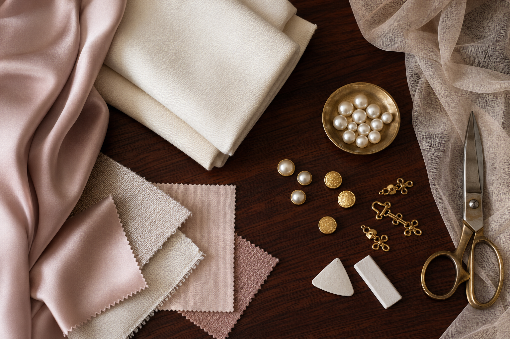

Personal before prescriptive
Every recommendation leaves room for body, culture, climate and character.
About the gallery
We created this independent journal to make good dressing feel clearer, kinder and more enduring.
Graceful Attire Gallery studies the relationship between a person and their clothes. We believe refinement is built through attention—not price, novelty or rigid rules. A well-dressed life begins with knowing what supports your days and makes you feel present.
Our editorial guides translate design ideas into practical decisions: how a shoulder should sit, why one fabric travels better than another, when contrast creates energy, and how care can extend the life of a favourite piece.

Every recommendation leaves room for body, culture, climate and character.
We favour adaptable combinations and considered purchases over constant novelty.
Construction, care and repair are part of style—not an afterthought.
Grace is what remains when every unnecessary detail has fallen away.